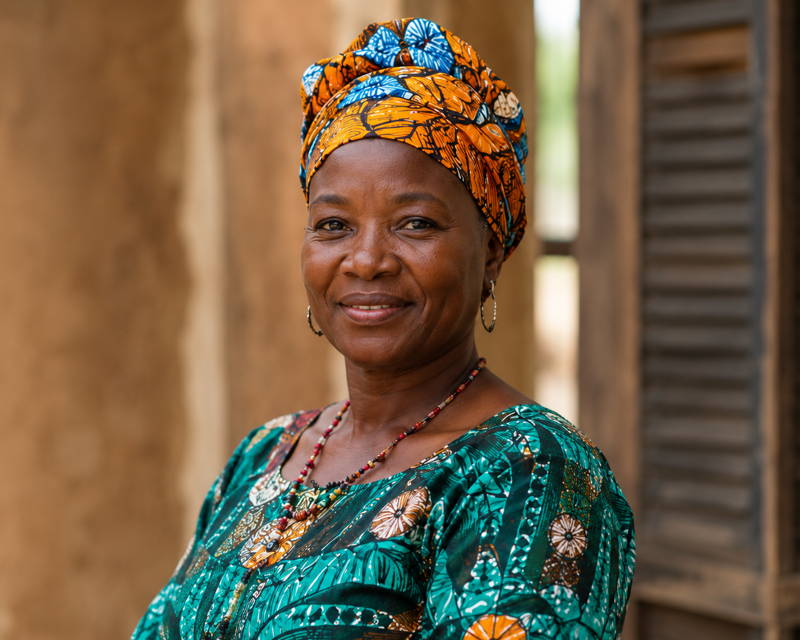

Coop. de Bouaké
Coopérative de Bouaké — Bouaké
« Notre aventure a commencé il y a 8 ans lorsque quelques femmes du quartier ont décidé de mettre en commun leurs savoir-faire pour créer une activité génératrice de revenus pour nos familles. »
Sur chaque produit à 5 000 F, 2 500 F reviennent à la coopérative et à ses membres.
Productrice 50%
Logistique & marque 50%
Sauce Graine Premium
Sauce Arachide
Sauce Gombo
Découvrir leurs produits →